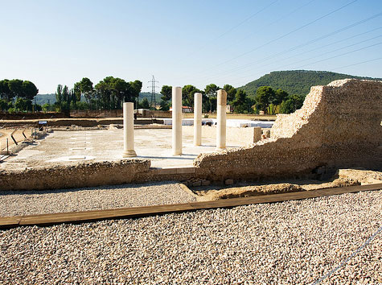

Lugares destacados
Alcalá es una ciudad de 200000 habitantes localizada a unos 30 km al este de Madrid. Ciudad Patrimonio de la humanidad desde 1998, cuenta con numerosos atractivos turísticos, culturales, históricos y de ocio.
Las primeras muestras de la presencia de población en la zona corresponden con el nucleo poblacional Carpetano conocido con el nombre de Iplacea localizado en la cima del cerro de San Juan del Viso, hablamos de la edad del Cobre y el Hierro.
Hacia el siglo II a.c. como consecuencia de la conquista romana de la península, la ciudad pasó a llamarse Complutum, y su ubicación fue trasladada al valle. La gran Complutum, que citara Cervantes en El Quijote, se hace visible en importantes yacimientos arqueológicos que sacan a la luz los magníficos restos los del foro municipal, grandes casas privadas, como la Casa de los Grifos con una excelente colección de pintura mural, o edificios singulares como la Casa de Hippolytus, antiguo colegio de Jóvenes de Complutum, en la que podemos admirar el mosaico de temática marina del maestro musivario Hippolytus
La ciudad medieval, que surgió en trono a la Catedral Magistral de los Santos Niños martirizados hace 1700 años, fue un ejemplo de modélica convivencia de las tres culturas. La calle Mayor, arteria principal de la ciudad, albergaba una importante y poderosa judería, los musulmanes se situaban en los alrededores de la calle Santiago y el caserío cristiano creció junto al templo martirial.
Fue un Arzobispo de Toledo, Francisco Ximénez de Cisneros, el que en 1499 fundó la Universidad de Alcalá que convirtió a la vieja Compluto en el centro intelectual de la España de los siglos XVI y XVII, viviendo la ciudad en estas centurias su momento de máximo esplendor. La huella de aquella época dorada puede verse en nuestros días contemplando los antiguos colegios universitarios. El Colegio Mayor de San Ildefonso, con sus patios renacentistas y herrerianos, la Capilla mudéjar y el Paraninfo, lugar de entrega del premio Cervantes, fue el primero de una larga lista fundaciones, religiosas o seglares, que convirtieron la ciudad universitaria ideada por Cisneros, en el modelo de Ciudad del Saber y Ciudad de Dios imaginada por San Agustín. El herreriano Colegio del Rey, fundado por Felipe II, el barroco Colegio de Málaga, el impresionante Colegio de Jesuitas, o el de los Dominicos, que hoy alberga el Museo Arqueológico Regional, no son más que una muestra del magnífico conjunto universitario renacentista y barroco que hoy se puede contemplar en Alcalá.
Para saber más de la universidad de Alcalá pincha aquí: Conoce la uah
Por último destacar el nacimiento de Miguel de Cervantes, el inmortal autor del Quijote, que dio la madurez al castellano y que convirtió su obra en referente universal de las letras hispánicas. Quedando ligados de este modo y para siempre, Quijote, Siglo de Oro, Alcalá de Henares y Cervantes.
La plaza Principal de la ciudad, en origen localizada en el extramuro, hoy en día en pleno casco urbano de la misma. En ella se encuentran el ayuntamiento, el Corral de Comedias y las ruinas de la Iglesia de Santa María. En el siglo XIX se remodeló y se instaló la estatua en homenaje al famoso escritor que le da nombre.
La catedral es el principal templo de la diócesis de Alcalá de Henares, sede del Obispo, así como del Cabildo catedralicio. Data de 1514 y presenta un marcado estilo gótico isabelino. Es, junto con la iglesia de San Pedro de Lovaina (Bélgica), el único templo en el mundo que posee el título de Iglesia Magistral, lo que suponía que todos sus canónigos debían ser doctores en teología